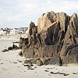

Victor Hugo donnit la pathole “pieuvre” à la langue Française auve la grande populathité d'sén histouaithe “Les Travailleurs d'la Mé”. Et où'est qu'i' trouvit chutte pathole? Ichîn dans l's Îles d'la Manche dans les bouoches dé nos pêtcheurs.
Dans chu temps-là en Français nou dithait “poulpe” pouor pieuvre. Ches deux mots veinnent du Latîn “polypus” tch'est d'originne Grècque - et don chu mot a viagi d'la Grèce à Rome et pis l'travèrs d'la Gaule, changi en “poulpe” dans l'Sud et en “pieuvre” siez nous. Y'a d'aut's mots étout en Nouormandie: “satrou” dans l'Cauchouais, “chatrou” dans l'Calvados, “minar” en Coutanchais, mais “purve” dans l'Hadgais et dans l'Jèrriais, l'Dgèrnésiais et l'Sèrtchais, j'ouïyons “pieuvre”.

Lé Rotchi ès Proscrits |
Chutte description d'la pieuvre d'vînt eune pièche littéthaithe pouor èrcitâtion, et l'mot “pieuvre” d'vînt bein connu - si bein connu qu'i' d'vînt d'couôteunme lé mot en Français pouor chutte manniéthe dé bête-là.
Né v'chîn un but tchi mouontre coumme tchi qu'Hugo la dêcrivit dans “Les Travailleurs d'la Mé”: “Chu monstre est l'chein qu'les navidgants appellent “poulpe”, qu'la scienche appelle céphalopode, et qu'la légende appelle kraken. Les mat'lots Angliais l'appellent devil-fish, lé paîsson-dgiâbl'ye. I' l'appellent étout blood-sucker, chucheux d'sang. Dans l's Îles d'la Manche nou l'nomme la pieuvre. Oulle est bein rare à l'entou d'Dgèrnésy, bein p'tite à l'entou d'Jèrri, bein grôsse et hardi commeune à l'entou d'Sèr.”
J'pouvons-t-i' craithe qu'nos pieuvres 'taient bein pus grandes et bein pus enraigies quand l'grand auteu arrivit en Jèrri y'a exactément chent chînquante ans, en 1851? Ou ch'est-i' qu'Victor Hugo fît d's êcalifias entouor chutte pouôrre p'tite bête à huit gambes, faîthant d'eune moûque un êléphant?
Av'ous janmais 'té attatchi, vous, par eune pieuvre dé même?
Auve l'aîgue d'eune articl'ye du “Viquet”
Viyiz étout: